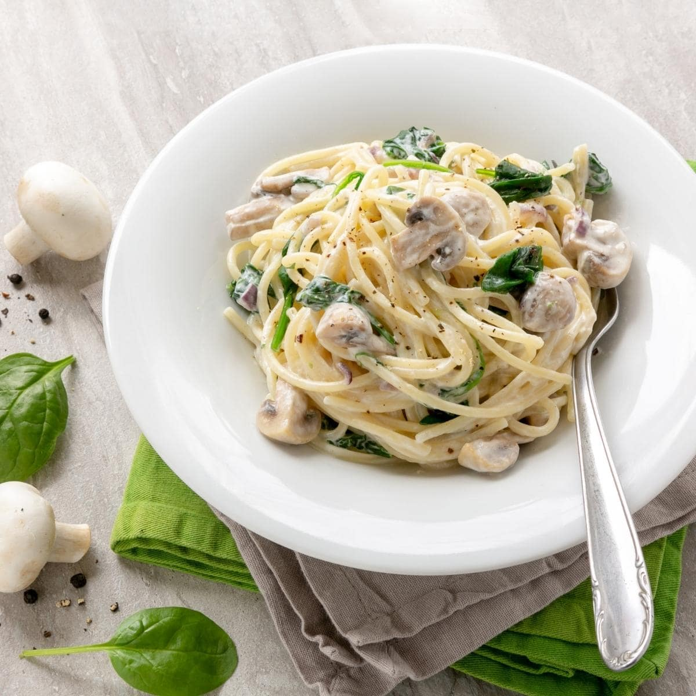

Creamy Spinach and Mushroom Pasta

Description
A rich and creamy pasta dish loaded with sautéed mushrooms and fresh spinach. Comfort food at its finest!
Ingredients
- 8 oz pasta (penne or fettuccine)
- 2 cups fresh spinach
- 1 cup mushrooms, sliced
- 2 cloves garlic, minced
- 1 cup heavy cream or coconut cream
- 1/4 cup grated Parmesan cheese (optional)
- 2 tbsp olive oil
- Salt and pepper to taste
Steps
- Cook pasta according to package instructions. Drain and set aside.
- Heat olive oil in a pan over medium heat. Add garlic and mushrooms, sauté until mushrooms are tender.
- Add spinach and cook until wilted.
- Pour in the cream and bring to a gentle simmer.
- Stir in Parmesan cheese (if using) and season with salt and pepper.
- Toss the cooked pasta in the sauce and serve warm.
Index